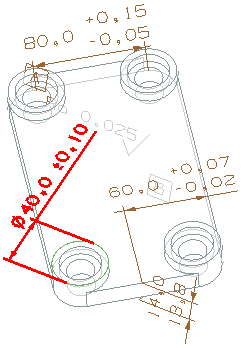

点击搜索组中的执行搜索。
匹配搜索准则的尺寸将显示在匹配 PMI 列表框中：
Perpendicular Dimension (13)
Cylindrical Dimension (17)
Cylindrical Dimension (14)
Vertical Dimension (4)
|
注释 |
您的列表显示顺序可能与此处显示有所不同。 |
在匹配 PMI 列表框中，选择 Cylindrical Dimension (14)，注意到它将在视图中高亮显示。
